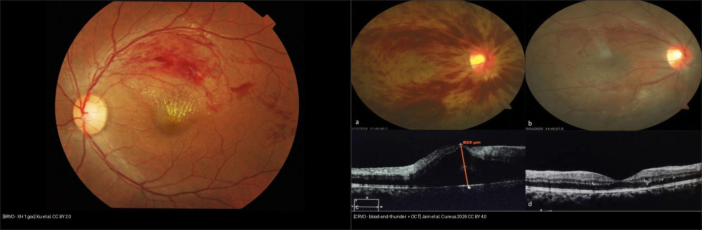
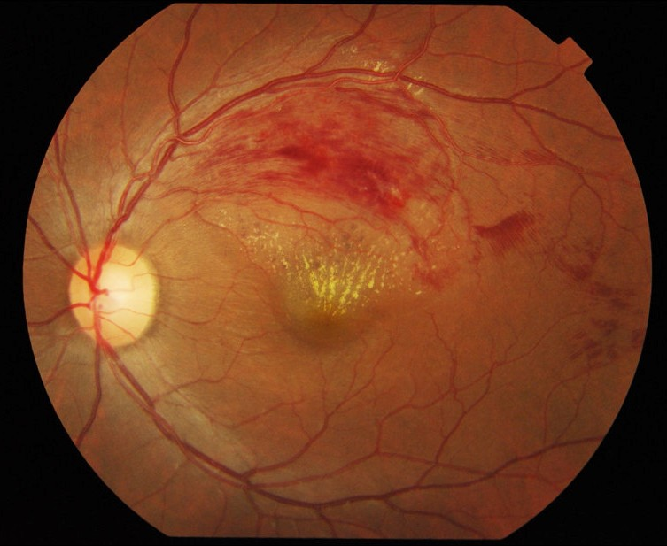
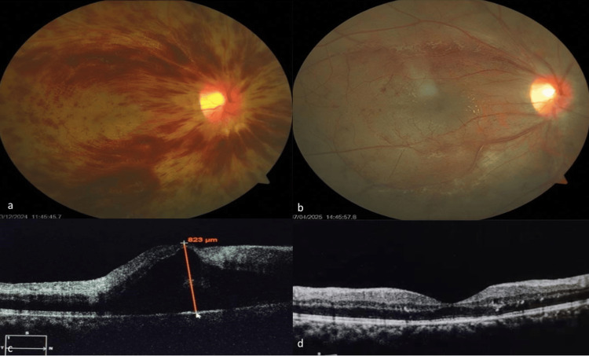
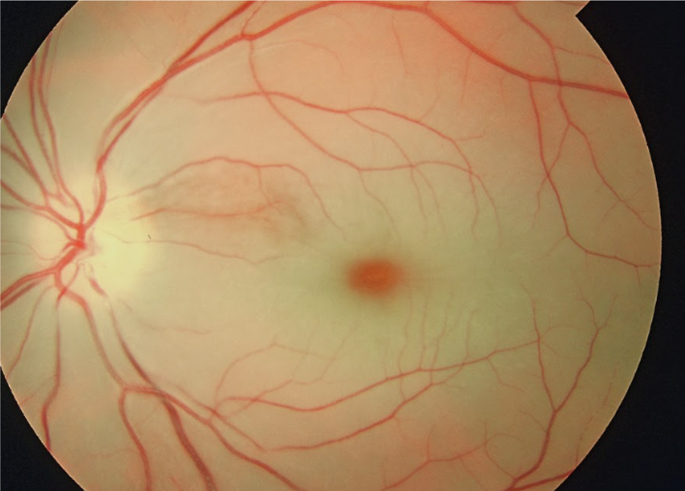

444 — Tắc mạch võng mạc: CRVO/BRVO vs CRAO — cherry-red & giờ vàng / Retinal vascular occlusions
Tags: pattern:tac-mach-vong-mac vung:vong-mac protocol:FFA-OCT
Mức chắc chắn (certainty): tổng hợp y văn (literature synthesis) — nhóm tự biên từ 2 ca mở (Cureus 2026 CC BY 4.0 + ảnh CC BY/BY-SA Wikimedia) và y văn tắc mạch, chưa gắn ca nguyên văn đơn lẻ.
1. Tổng quan — tĩnh mạch vỡ rò rỉ, động mạch trắng nhợt + số giờ vàng
- CRVO (tắc tĩnh mạch trung tâm): huyết khối tại lá sàng (lamina cribrosa) nơi ĐM/TM chung bao xơ → ứ tĩnh mạch → xuất huyết + phù + thiếu máu 4 góc (blood-and-thunder). Phù hoàng điểm là nguyên nhân mờ chính — và đáp ứng anti-VEGF rất tốt: CMT 823 → 275 µm sau 1 mũi bevacizumab (Jain 2026, nam 23 tuổi, CRVO sau gắng sức).
- BRVO (tắc nhánh): tại điểm bắt chéo động–tĩnh mạch (arteriovenous crossing) — động mạch xơ cứng đè tĩnh mạch → chỉ 1 góc bị (thường thái dương trên), còn lại bình thường.
- CRAO (tắc động mạch trung tâm): thuyên tắc (mảngnl cholesterol Hollenhorst, vôi, tiểu cầu) hoặc viêm (GCA) → võng mạc trong trắng đục thiếu máu, chỉ hõm trung tâm (fovea) còn đỏ vì nuôi bởi hắc mạc bên dưới → cherry-red spot. TẠI SAO giờ tính bằng giờ: võng mạc trong hoại tử không hồi phục sau ~90–240 phút thiếu máu hoàn toàn — mọi can thiệp (mát-xa nhãn cầu, chọc tiền phòng, carbogen, tiêu sợi huyết) chỉ có ý nghĩa trong < 4–6 giờ đầu.
- Số nằm lòng: thiếu máu CRVO = vùng không tưới máu > 10 diện đĩa thị trên FFA; tân mạch mống mắt/glaucoma tân mạch thường bùng ở ~90–100 ngày (100-day glaucoma) — soi góc + khám mống mắt mỗi lần tái khám CRVO thiếu máu.
2. Gamut mờ mắt đột ngột không đau — 3 câu chia 90% ca
- Mờ + xuất huyết 4 góc + tĩnh mạch giãn ngoằn ngoèo: CRVO — FFA phân thiếu máu/không, OCT đo phù, anti-VEGF.
- Mờ + xuất huyết chỉ 1 góc + góc còn lại sạch: BRVO — anti-VEGF/laser khu trú góc bệnh, tìm tăng HA/mỡ máu.
- Mù gần hoàn toàn trong giây–phút + võng mạc trắng + cherry-red: CRAO — cấp cứu giờ vàng + tầm soát nguồn thuyên tắc (cảnh, tim) + loại GCA.
- Mờ 1 góc + mảng vàng óng trong động mạch: BRAO + mảng Hollenhorst — cùng xử trí nguồn như CRAO nhưng tiên lượng góc tốt hơn.
- Mờ + phù đĩa + xuất huyết (không trắng nhợt): CRVO thể nặng — đừng nhầm CRAO (CRAO trắng, ít xuất huyết).
3. Bảng so sánh phân biệt (ma trận đối chiếu)
| Thực thể (entity) | Hình ảnh điển hình | Chốt vào (rule-in) | Chốt loại (rule-out) | Gợi ý xác nhận |
|---|---|---|---|---|
| CRVO | XH 4 góc + TM giãn + phù đĩa + phù hoàng điểm OCT | Tắc tại đĩa → toàn võng mạc | Chỉ 1 góc → BRVO | FFA (> 10 DD = thiếu máu), anti-VEGF |
| BRVO | XH 1 góc thái dương + góc còn lại bình thường | Ranh giới đúng đường ngang + điểm bắt chéo | 4 góc đều → CRVO | HA/mỡ máu + laser/anti-VEGF góc bệnh |
| CRAO | Võng mạc trắng + cherry-red + ĐM nhỏ + boxcarring | Mù đột ngột + trắng nhợt + cherry-red | XH nhiều + TM giãn → CRVO | Giờ vàng < 4–6 giờ + Doppler cảnh + echo |
| BRAO | Trắng 1 góc + mảng Hollenhorst vàng óng | Mảng thuyên tắc thấy được + trắng theo vùng | Cherry-red trung tâm → CRAO | Như CRAO (nguồn thuyên tắc) |
| CRVO thiếu máu | Như CRVO + RAPD + thị lực kém + FFA > 10 DD | RAPD + không tưới máu rộng | Không RAPD + thị lực còn → chưa thiếu máu | Soi góc/mống mắt mỗi lần (tân mạch ~90 ngày) |

Trái: BRVO nhánh thái dương trên (Ku et al., CC BY 2.0). Phải: CRVO (a) nền blood-and-thunder, (b) hết xuất huyết sau bevacizumab, (c) OCT phù 823 µm, (d) còn 275 µm (Jain et al., Cureus 2026 Fig. 1, CC BY 4.0). Ảnh ghép letterbox.Quiz composite: che 2 nhãn, hỏi bên nào cần soi góc tìm tân mạch sát nhất?
Bấm để hiện đáp án
- Trái = BRVO — bệnh 1 góc, tân mạch võng mạc góc bệnh (laser khu trú khi có tân mạch/thiếu máu).
- Phải = CRVO — toàn võng mạc thiếu máu tiềm ẩn → soi góc + mống mắt mỗi lần tái khám (glaucoma tân mạch ~90–100 ngày).
- Cả hai đều phù hoàng điểm đáp ứng anti-VEGF, nhưng CRVO đe dọa toàn nhãn cầu hơn.
Thiếu máu vs không thiếu máu — ranh giới quyết định laser hay tiêm
- Không thiếu máu: thị lực còn khá, không RAPD, FFA tưới máu còn — anti-VEGF trị phù + theo dõi (như ca Jain 23 tuổi: 6/18 → 6/9).
- Thiếu máu: RAPD +, thị lực kém, FFA > 10 diện đĩa không tưới máu — nguy cơ tân mạch mống mắt/góc → quang đông rải rác (PRP) khi đã có tân mạch, không PRP dự phòng mù quáng.
- Cạm bẫy: CRVO thiếu máu vẫn có thể "đẹp dần" trên đáy mắt trong khi tân mạch góc âm thầm mọc — bỏ soi góc là bỏ sót glaucoma tân mạch.
4. Protocol chụp + xử trí giờ vàng
- OCT hoàng điểm: đo CMT + nang trong/dưới võng mạc — quyết định tiêm nhắc lại (PRN theo OCT, như ca Jain: 823 → 275 µm).
- FFA: phân thiếu máu (> 10 DD), tìm tân mạch, loại viêm mạch; OCTA theo dõi vùng không tưới máu không cần thuốc nhuộm.
- CRAO < 4–6 giờ:** mát-xa nhãn cầu + hạ nhãn áp cấp (chọc tiền phòng/thuốc) + carbogen + chuyển cấp cứu đột quỵ (não và mắt cùng nguồn!); **nghi GCA (tuổi > 50 + đau đầu + đau hàm + ấn thái dương đau + ESR/CRP cao) → methylprednisolone ngay, không chờ sinh thiết.
- Tầm soát nguồn: Doppler động mạch cảnh + siêu âm tim (lỗ bầu dục, van) + HA/mỡ máu/đường — tắc mắt là cảnh báo đột quỵ não.
- CRVO/BRVO: anti-VEGF first-line cho phù; steroid nội nhãn khi đáp ứng kém; laser (grid/PRP) khi có tân mạch hoặc thiếu máu rộng.
flowchart TD
A[Mờ/mù đột ngột không đau] --> B{Võng mạc trắng + cherry-red?}
B -->|Có| C[CRAO: giờ vàng < 4-6 giờ + loại GCA + Doppler cảnh/echo]
B -->|Không| D{Xuất huyết mấy góc?}
D -->|4 góc + TM giãn| E[CRVO: OCT + FFA phân thiếu máu + anti-VEGF]
D -->|1 góc| F[BRVO: anti-VEGF/laser góc bệnh + trị HA/mỡ máu]
E --> G{RAPD + FFA > 10 DD?}
G -->|Có| H[Thiếu máu: soi góc mỗi lần, PRP khi có tân mạch]
G -->|Không| I[OCT PRN + theo dõi chuyển dạng thiếu máu]
5. Biến thể bình thường và cạm bẫy
- Động–tĩnh mạch bắt chéo sinh lý — không phải chỗ nào bắt chéo cũng là BRVO: phải có xuất huyết + phù đúng vùng hạ lưu mới kết luận.
- Cherry-red giả: hắc mạc đậm màu bẩm sinh ở da sẫm + võng mạc trong bình thường — không có trắng nhợt xung quanh thì không phải CRAO.
- Cilioretinal sparing (~20% dân số): CRAO nhưng thị lực trung tâm còn tốt vì bó mạch mi–võng mạc nuôi riêng — đừng vì "còn đọc được" mà loại CRAO khi võng mạc trắng.
- CRVO sau gắng sức/Valsalva ở người trẻ (ca Jain 23 tuổi): không HA/tiểu đường không có nghĩa không CRVO — hỏi gắng sức, thuốc, đông máu.
- GCA bị bỏ sót: BN > 50 tuổi mù 1 mắt + đau đầu mà chỉ nhỏ mắt hạ áp là sai lầm chết người (mắt còn lại + não) — ESR/CRP + steroid ngay.
6. Tự lượng giá — Blind Quiz
Ca 1 — Mờ mắt 1 bên, đáy mắt xuất huyết 1 góc trên. Tắc gì?

- Hỏi: xuất huyết mấy góc? Đâu là điểm tắc? CRVO hay BRVO?
Bấm để hiện đáp án (findings + chẩn đoán)
- Dấu hiệu (findings): xuất huyết + phù khu trú góc thái dương trên, các góc còn lại bình thường, hoàng điểm phù vàng.
- Chẩn đoán (diagnosis): BRVO (tắc nhánh tĩnh mạch) — vì bệnh đúng 1 góc hạ lưu điểm bắt chéo động–tĩnh mạch.
- Xử trí: anti-VEGF trị phù + tìm HA/mỡ máu; laser khu trú khi có tân mạch/thiếu máu góc bệnh.
- Nguồn ảnh: Ku et al., CC BY 2.0 via Wikimedia Commons.
Ca 2 — Thanh niên 23 tuổi mờ đột ngột sau tập tạ nặng. Cặp đáy mắt + OCT này nói gì?

- Hỏi: (a) blood-and-thunder + TM giãn là gì? (c) CMT 823 µm nghĩa gì? Kết quả sau 1 mũi tiêm?
Bấm để hiện đáp án (findings + chẩn đoán)
- Dấu hiệu (findings): (a) xuất huyết 4 góc + tĩnh mạch giãn ngoằn ngoèo + phù đĩa; (c) OCT nang trong + CMT 823 µm.
- Chẩn đoán (diagnosis): CRVO không thiếu máu — toàn võng mạc, thị lực còn 6/18, không RAPD, xét nghiệm toàn thân sạch.
- Kết quả: sau 1 mũi bevacizumab — (b) hết xuất huyết, (d) CMT còn 275 µm, thị lực 6/9.
- Nguồn ảnh: Jain et al., Cureus 2026 Fig. 1 (PMC13268218), CC BY 4.0.
Ca 3 — Mù đột ngột 1 mắt trong vài phút, chỉ còn thấy bóng bàn tay. Nhìn đáy mắt, giây nào quyết định?

- Hỏi: trắng + đỏ trung tâm là gì? Chẩn đoán? 3 việc phải làm trong giờ đầu?
Bấm để hiện đáp án (findings + chẩn đoán)
- Dấu hiệu (findings): võng mạc trong trắng đục thiếu máu + cherry-red spot hõm trung tâm (hắc mạc còn tưới máu lộ qua), mạch máu nhỏ lại.
- Chẩn đoán (diagnosis): CRAO (tắc động mạch trung tâm) — giờ vàng < 4–6 giờ, mỗi phút là tế bào hạch.
- Xử trí giờ đầu: hạ nhãn áp cấp (mát-xa/chọc tiền phòng) + loại GCA nếu > 50 tuổi (ESR/CRP + steroid ngay) + Doppler cảnh/echo tìm nguồn (cảnh báo đột quỵ não).
- Nguồn ảnh: Wikimedia Commons, CC BY-SA 4.0 (dùng nguyên bản, không cắt ghép).
Bài liên quan chéo
- 400 – Tổng quan Mắt
- 441 – OCT hoàng điểm (phù hoàng điểm do tắc tĩnh mạch)
- 443 – Võng mạc đái tháo đường (phân biệt xuất huyết ĐTĐ vs RVO)
- 430 – Đường thị giác (CRVO trong DDx phù đĩa)
Ảnh
444_BRVO_Fundus_Wikimedia-Ku-CCBY20.jpg— Ku et al., CC BY 2.0 via Wikimedia Commons.444_CRAO-cherry-red_Fundus_Wikimedia-18mlk7-CCBYSA40.png— Wikimedia Commons, CC BY-SA 4.0 (giữ nguyên bản).444_CRVO-da-mode_Fundus-OCT_PMC13268218-Fig1-CCBY.jpg— Jain et al., Cureus 2026 (PMCID: PMC13268218), CC BY 4.0.- Chi tiết giấy phép từng ảnh trong
images/CREDITS.md. AuntMinnie: chỉ dẫn link, không tải.
Không dùng để chẩn đoán độc lập khi chưa có người hướng dẫn.